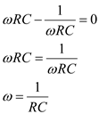
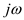

Apply Kirchhoff’s voltage law at node voltage .
.
…… (1)
Apply Kirchhoff’s voltage law at node voltage.
…… (1)
Apply Kirchhoff’s voltage law at node voltage  .
.

Substitute for .
.
Simplify further.
Determine the expression for the feedback factor .
.

Substitute  .
.
Find the frequency for zero loop phase.
Equate the imaginary part of  to zero for zero loop phase.
to zero for zero loop phase.

Thus, the frequency for zero loop phase is.

The gain of the non-inverting op-amp is,
Write the expression for the condition for oscillations.

Substitute  for
for  and
and  for
for .
.

Thus,  for oscillations is
for oscillations is  .
.
Write the expression for the loop gain .
.
.
Substitute  for
for  and
and  for
for  .
.
Thus, the expression of  is .
is .
Substitute  for in the expression of
in the expression of  .
.
Thus, the expression of  is.
is.